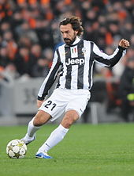
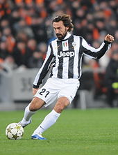

Andrea Pirlo
Juventus
Dopo aver indossato per nove stagioni la maglia rossonera, nell'estate del 2011 si accasa a parametro zero alla Juventus.L'avventura torinese ha costituito una sorta di seconda giovinezza per Pirlo, il cui innesto si è rivelato determinante per il ritorno ai vertici del club bianconero dopo i difficili anni post-Calciopoli, e annesso avvio di un nuovo ciclo di vittorie. 2011-2013 «Le prime cose che ho detto a Pirlo? Sono state parole di estrema felicità, la Juve non poteva scegliere giocatore migliore e sono felicissimo.» (Alessandro Del Piero.) Andrea Pirlo in azione con la Juventus nel 2011. Ha esordito in maglia bianconera l'11 settembre 2011 nella partita di campionato contro il Parma (4-1), gara nella quale ha realizzato gli assist per il primo e il quarto gol della squadra torinese segnati rispettivamente da Lichtsteiner e Marchisio. a segnato il primo gol in maglia bianconera nella partita Juventus-Catania 3-1 del 18 febbraio 2012, sfruttando un calcio di punizione.L'11 marzo 2012, in occasione della gara della 27ª giornata di campionato contro il Genoa, ha disputato la 400ª partita in Serie A.[98] Il 6 maggio 2012, col successo sul Cagliari sul campo neutro di Trieste, si è aggiudicato lo scudetto coi bianconeri.Ha concluso la stagione con 13 assist[100] e 3 reti in campionato. L'AIC lo ha premiato con il titolo di miglior calciatore assoluto della Serie A 2011-2012.Sempre in questa stagione si è classificato al quarto posto dell'UEFA Best Player in Europe Award. L'11 agosto 2012 ha vinto la sua seconda Supercoppa italiana grazie al risultato di 4-2 sul Napoli.Alla fine dell'anno solare si classifica 7º al Pallone d'oro FIFA 2012, vinto poi dall'argentino Lionel Messi, e viene inserito nella Squadra dell'anno UEFA.Il quotidiano inglese The Guardian lo classifica 8º tra i migliori calciatori dell'anno. Il 5 maggio 2013, grazie alla vittoria casalinga per 1-0 sul Palermo, ha vinto – con tre giornate d'anticipo – il terzo scudetto personale di fila. Conclude la stagione con 5 gol, tutti su calcio di punizione; risulta così il miglior tiratore del campionato sotto questo aspetto, a pari merito con Francesco Lodi.A fine stagione l'azienda Bloomberg lo ha classificato al quinto posto tra i migliori giocatori europei.
 

Precedente Successiva